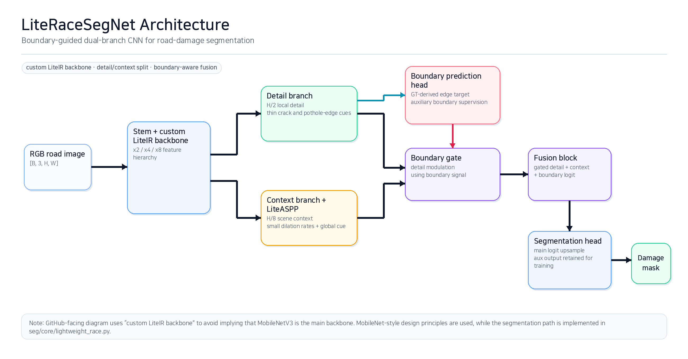
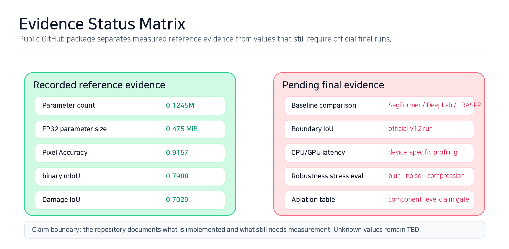
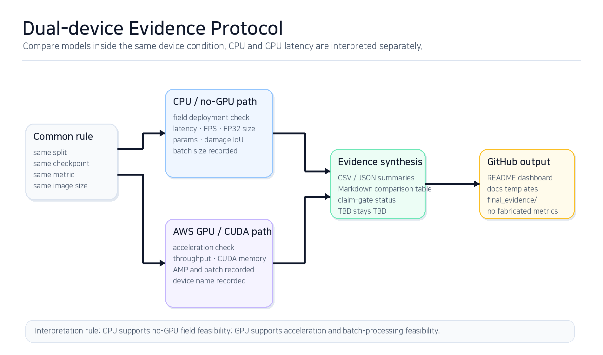
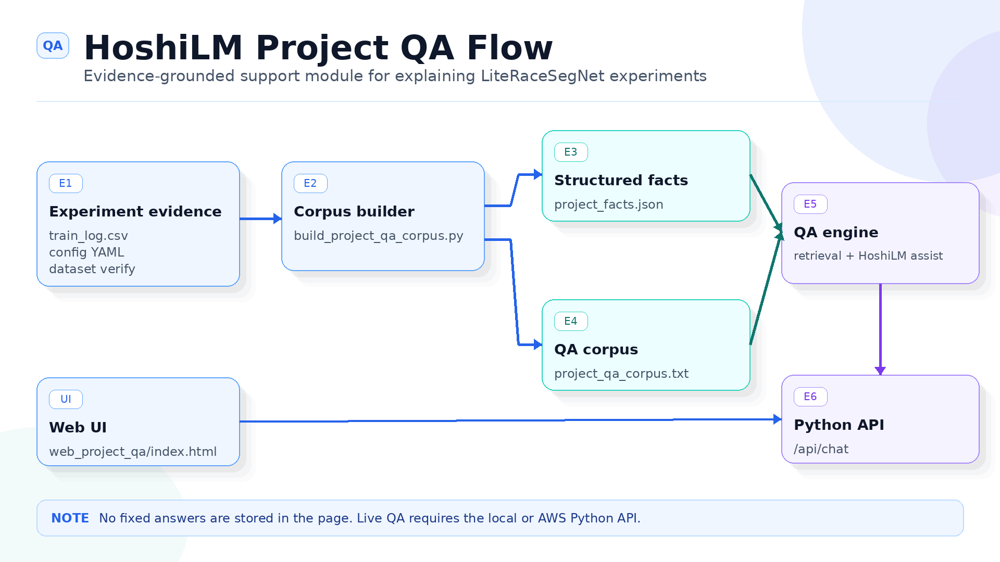
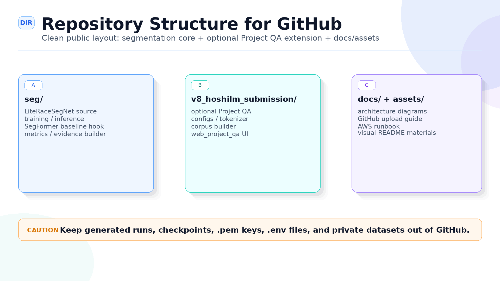
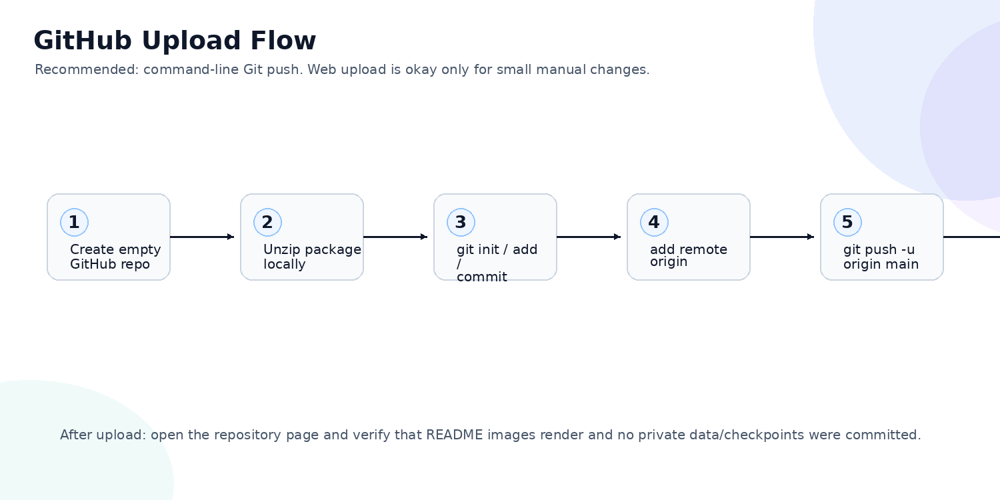
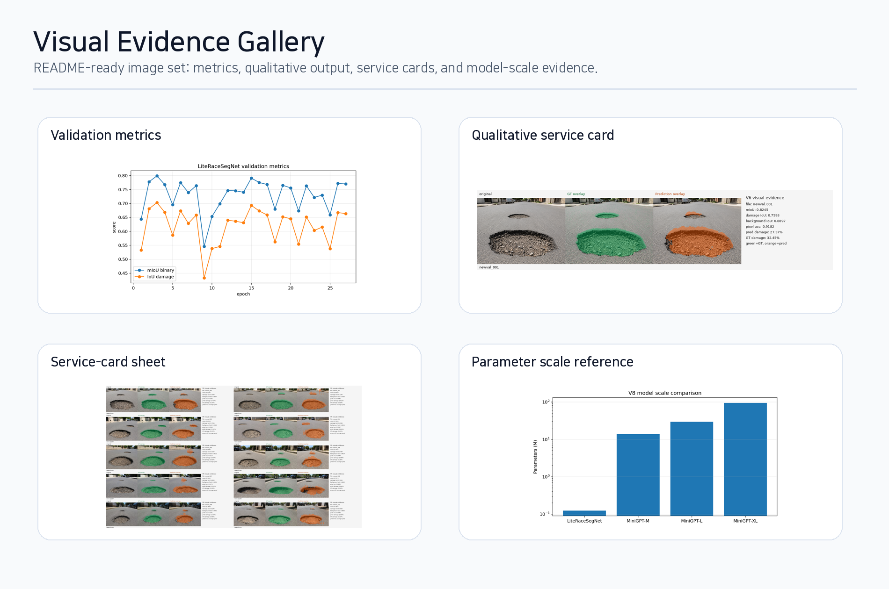

Boundary degradation
Road damage masks are small and irregular. The project treats edge erosion, dilation, thin-structure loss, context absorption, and false boundary activation as first-class failure modes.
LiteRaceSegNet is a custom lightweight CNN for road-damage semantic segmentation. The repository is organized around boundary degradation, dual-branch detail/context fusion, CPU/GPU evidence, and an optional HoshiLM Project QA module for explaining experiment records.

Road damage masks are small and irregular. The project treats edge erosion, dilation, thin-structure loss, context absorption, and false boundary activation as first-class failure modes.
H/2 detail features preserve small edge cues while H/8 context features and LiteASPP capture road texture and scene context at low cost.
Measured reference values are shown separately from missing baseline, Boundary IoU, latency, robustness, and ablation results.
The diagram below is the cleaner implementation-facing view. It keeps the current wording: custom LiteIR-style lightweight backbone, not a direct MobileNetV3 backbone claim.

Reference LiteRaceSegNet parameter count.
Parameter-only FP32 size estimate.
Small validation reference, not a final generalization claim.


Final baseline numbers, Boundary IoU, CPU/GPU latency, robustness, and ablation values remain TBD until the official evidence scripts are run.
HoshiLM Project QA is included as a reporting/support extension. It explains project facts and experiment evidence, but it does not generate segmentation masks or change model predictions.




| Included | Excluded |
|---|---|
| Source code, configs, scripts, diagrams, static demos, Project QA preview, evidence templates, smoke check. | Manuscript files, raw datasets, private images, masks, checkpoints, pretrained weights, credentials. |
Smoke check: python scripts/smoke_check_literace.py | Unverified numbers and hidden dependency on paper/docx files. |
Copyright (c) 2026 김원석.
This project is public for portfolio viewing and academic demonstration only. Unauthorized copying, redistribution, modification, public reposting, derivative works, or commercial use of LiteRaceSegNet-related code, documentation, diagrams, experiment records, configuration files, and assets is not permitted without prior permission from the author.
Third-party libraries, frameworks, datasets, and model implementations remain governed by their original licenses. See LICENSE, NOTICE.txt, and THIRD_PARTY_NOTICES.md.